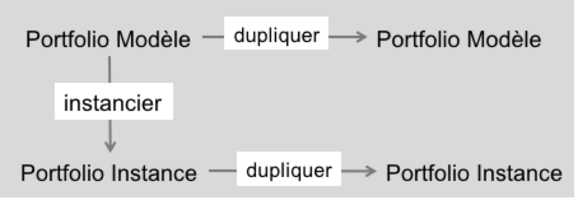

Dans Karuta un portfolio est représenté par un arbre structuré (voir STRUCTURES).
Il y a plusieurs types d'arbres dans Karuta :
Un modèle de portfolio est une structure d'arbre qui organise des ressources. Les ressources sont les éléments qui vont contenir les données : les données fournies aux usagers (comme des instructions ou des fichiers à consulter) et les données que les usagers vont entrer pour peupler leur portfolio. Karuta offre des ressources de plusieurs types : champ de texte (texte court), éditeur de texte (texte long), fichier, image, son, vidéo, calendrier, etc.
Une fois construit par le designer, le modèle de portfolio est instancié pour chaque usager, c'est à dire que l'on fait une copie du modèle et le nouvel arbre devient le portfolio spécifique à un usager.
Une instance de portfolio est une copie du modèle pour un usager spécifique. Au moment de l'instantiation (copie) les rôles et les droits sont créés pour chacun des éléments du portfolio.
Un référentiel est une liste d'éléments qui seront référencés dans les portfolios, par exemple un référentiel de compétences ou encore les éléments d'une liste déroulante.
Le portfolio de composantes réutilisables sert à stocker des morceaux de portfolio qui seront ensuite mis à la disposition de l'usager via un menu. L'usager peut ainsi ajouter des morceaux à son portfolio selon ses besoins.
Un rapport est un script contenant des commandes spécifiques qui permettent de sélectionner des informations d'un ou de plusieurs portfolios et de les afficher sous une présentation différente. Par exemple pour faire un tableau de bord, un cv ou un rapport de cohorte. Les commandes de script de rapport permettent de naviguer dans les portfolios pour y sélectionner les éléments à afficher. Le résultat est affiché dans un tableau html dont la mise en forme est libre au designer.
Un batch est un script contenant des commandes qui permettent d'une manière automatique de créer des usagers, des portfolios, de mettre à jour des éléments du portfolio, etc. Un script de batch est généralement associé à un fichier CSV contenant, par exemple, la liste des usagers. L'éxécution du script de batch créera alors automatiquement tous les portfolios des usagers. Un script de batch peut également être associé à un formulaire.
Un formulaire batch permet d'exécuter un script de batch d'une manière unitaire pour un seul usager.
Un portfolio ou arbre dans Karuta est construit en y ajoutant des branches un peu comme dans un jeu de Lego. Certaines branches sont prédéfinies : les éléments de base de Karuta. D'autres branches sont construites par le designer en assemblant des branches de base. On peut ainsi construire des portfolios complexes.
On peut aussi définir des menus permettant à l'usager final d'ajouter lui-même des branches à son portfolio.
On distingue deux types de portfolios :
Le diagramme ci-dessous présente les liens entre les deux types de portfolios :


Dans un portfolio modèle, le designer peut simuler les différents rôles.